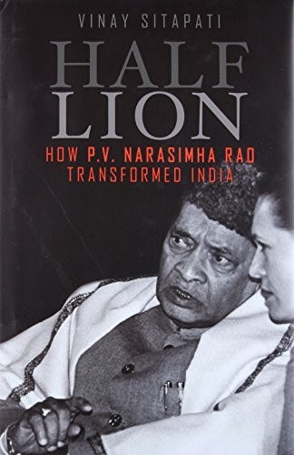

Library › History
Half-Lion: How P.V. Narasimha Rao Transformed India — Summary & Key Lessons

The quiet Andhra insider who ended the license raj, survived a party that erased him, and proved that revolution can whisper.
📖 OPEN THE FULL INTERACTIVE BREAKDOWN →🌐 Read it in Hindi, Hinglish, Gujarati, Tamil & 22 more languages — free, with audio.
💡 The Big Idea
Sitapati's revisionist biography restores Rao from caricature to complexity: the scholar-politician (ten languages, novelist, translator) who became prime minister at 70, inherited a bankrupt state with two weeks of import reserves, and presided over the dismantling of four decades of socialism. The book's thesis is that Rao was not a bystander to Manmohan Singh's reforms but their political architect: he absorbed the party's Left outrage, changed his own rhetoric (socialist words, capitalist deeds) to protect the government, and traded time for change. It is equally honest about his failures: the Babri demolition on his watch, the corruption cases, the loneliness of the last years. The deeper theme: transformation in a noisy democracy requires misdirection, patience, and the willingness to be misunderstood by your own side, with the price collected later.
🧠 The 8 Key Lessons
Lesson 1: Underestimation Is a Resource: Spend It Deliberately
The Half-Lion Trick
Rao was written off as a stopgap: 70 years old, about to retire, no faction. That low expectation bought him space: rivals watched the reform-winter arrive before realizing what the quiet man had done. Underestimation is cheap cover for structural change; leaders who advertise their revolutions invite early resistance. The skill is timing the reveal: spend the element of surprise on irreversible moves.
📖 Example: By the time party elders understood that industrial licensing, trade and exchange-rate regimes were permanently altered, the budget had passed, the rupee had devalued twice, and reversal would have meant openly collapsing their own government. Read the full example →
⚡ Do this: List the changes you want that would trigger early opposition if announced. Sequence the irreversible ones first, quietly, before the loudest critics finish underestimating you.
Lesson 2: In a Crisis, Move Everything That Cannot Wait
Fifteen Days of Reserves
With reserves covering two weeks of imports and gold airlifted as collateral, Rao backed devaluation within weeks, collapsed licensing lists, opened trade, and invited foreign investment, all with a minority government. Crisis narrowed the possible to the necessary: opponents of every reform agreed something had to be done. The discipline: draft your crisis playbook in peacetime, because the window is short and the gold literally flies at midnight.
📖 Example: The July 1991 budget and the twin devaluations (19 and 18 percent steps) passed while critics were still organizing, changing the economy's operating system before resistance could coalesce. Read the full example →
⚡ Do this: Draft your own midnight-memo now: the five structural changes you would execute in week one of a genuine crisis. Keep it updated; crisis windows do not extend.
Lesson 3: Speak Left, Govern Right: Rhetoric as Shock Absorber
Socialist Verses
Rao kept the party's socialist vocabulary while dismantling its machinery, absorbing ideological shock through language: pro-poor speeches accompanying delicensing, Garibi Hatao tones around market openings. Cynical? Sitapati frames it as democratic engineering: a party and public trained on four decades of socialism needed transitional grammar. Reformers who attack the liturgy get excommunicated before they legislate.
📖 Example: The same prime minister who delicensed industry expanded rural employment and food security programs, giving the party's base material proof that the sky had not fallen. Read the full example →
⚡ Do this: When changing an organization's doctrine, preserve its ritual language while changing its resource flows. Grammar first, liturgy later.
Lesson 4: Let the Technocrat Take the Fire
The Manmohan Arrangement
Rao appointed Manmohan Singh, a non-politician of unimpeachable integrity, as finance minister and shielded him through every storm, famously promising him every reform would pass. The arrangement let technical necessity travel in a non-political vehicle, with the politician absorbing partisan damage. The pattern works in any institution: pair the change-maker with a legitimacy shield, and protect the pair explicitly.
📖 Example: When industrialists and socialists alike attacked the budget, Rao publicly backed Singh against his own colleagues, converting a career-risking appointment into the partnership history remembers. Read the full example →
⚡ Do this: If you lead transformation, find your technocrat (competent, credible, non-threatening) and defend them publicly at the exact moments your own faction attacks.
Lesson 5: Babri: The Cost of Fatal Patience
December 6, 1992
The book is unsparing on Rao's greatest failure: the mosque's demolition on his watch despite warnings, deployment options and his own intelligence; his passivity (whether misjudgment or design) changed India's trajectory and defines the darker half of his record. The lesson is structural: the same leader who moved decisively in economics froze when the political price was immediate and internal. Selective courage is how good leaders build catastrophes.
📖 Example: Post-demolition inquiries documented hours in which central intervention was possible and argued over; the karsevaks' hammers undid in an afternoon the patience of centuries, with consequences still compounding. Read the full example →
⚡ Do this: Identify the decision you are slowest to make because its beneficiaries are inside your own coalition. That is where your Babri lives; pre-commit a decision rule for it.
Lesson 6: Minority Government, Maximum Change
The Art of Surviving Arithmetic
Rao ran a minority government through the deepest reforms in Indian history: managing numbers daily, courting opposition MPs individually, timing votes, and using bye-elections and defections without ideology. The craft lesson: leadership in constrained arithmetic is a daily operational discipline (votes are scheduled, relationships are farmed), not a mandate you wait for.
📖 Example: The August 1991 no-confidence motion was survived by a government with fewer than half the seats, through a blend of persuasion, patience and parliamentary craft that itself became a case study. Read the full example →
⚡ Do this: Whatever your governing body (board, council, committee), map every vote 90 days ahead and farm the relationships before the arithmetic needs them.
Lesson 7: The Corruption Cases: Shadows of the Machine
St Kitts, Lakhubhai, Cheating Charges
Rao's later years brought criminal cases (later acquitted on all counts) tied to political warfare and the era's machine politics; Sitapati treats them as part of the price of operating inside a transactional system Rao himself navigated for decades. The uncomfortable lesson: leaders who spend decades inside ambiguous systems inherit their debts, and acquittal does not refund reputation.
📖 Example: The Lakhubhai Pathak cheating case, driven by political enemies, collapsed in court, but the years of trial framed Rao's public image more than his reforms ever did. Read the full example →
⚡ Do this: Audit the ambiguous practices your role tolerates today. Every one is a future case study with your name on the cover, acquitted or not.
Lesson 8: Erasure and Posthumous Verdicts
The Congress That Forgot Him
The party Rao served for six decades erased him from its histories, denied him a home constituency's honors, and reduced his funeral's politics to logistics; decades later, historians restored his centrality. Institutional memory is political: those who change systems often forfeit the loyalty of the system's fans. Build your record for the archive, not for the next party meeting.
📖 Example: Rao spent his retirement translating and writing, essentially building his own historical defense file; the archives Sitapati later mined became the biography that reversed the erasure. Read the full example →
⚡ Do this: Keep a dated record of your key decisions and reasons (a decision journal). The archive is the only audience that votes after everyone currently shouting has gone quiet.
✅ 5-Step Action Plan
- Sequence irreversible structural changes before your opponents stop underestimating you.
- Write and refresh your crisis playbook in peacetime; crises have short windows.
- Pair every change-agent with a legitimacy shield and defend the pair publicly.
- Pre-commit a decision rule for the decisions you are slowest to make.
- Keep a dated decision journal; the archive is your final and fairest audience.
⚠️ When This Doesn't Work
Sitapati wrote with access to Rao's private papers, but the book is consciously revisionist: critics argue it weighs Rao's 1991 economy too heavily against his 1992 Babri failures and underplays the roles of others in the reform cabinet. Rao's exact role in that afternoon remains disputed terrain. Read it as the strongest case for the defense, alongside the prosecution's voluminous file.
💀 The Graveyard Proves It
📜 The License Raj — The Economy That Died of Waiting: Two Weeks of Reserves Ended 44 Years of Permits. Burn: Two weeks of import cover left; 47 tonnes of gold airlifted as collateral; 44 years of central planning dismantled within months. Read the full case study →
💬 Best Quotes from Half-Lion: How P.V. Narasimha Rao Transformed India
- “In India, the art of reform is to speak in socialist verses while walking in capitalist shoes.”
- “The lion spent his life being underestimated, and spent that capital wisely.”
- “Every transformation needs a politician willing to be hated by the very people he empowers.”
- “History's verdict arrived by post, years after the man had stopped waiting for it.”
Interactive version: mark lessons as read, listen in your language, share quote cards.